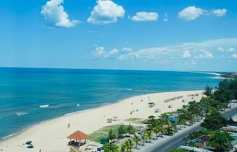
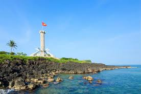
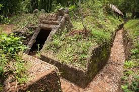
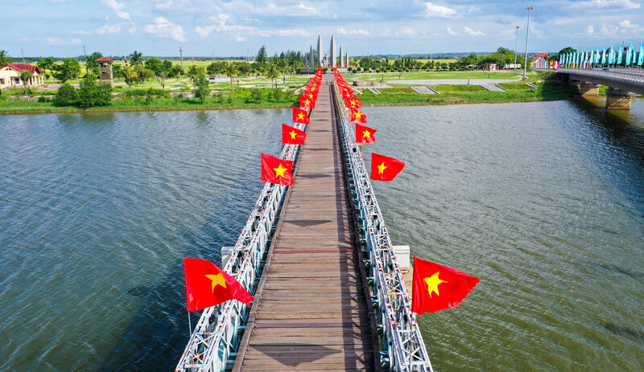
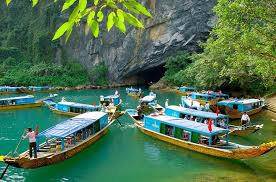
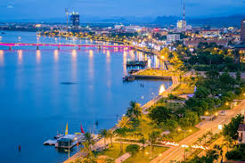
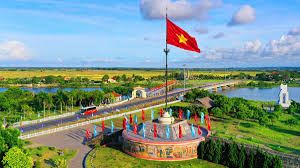
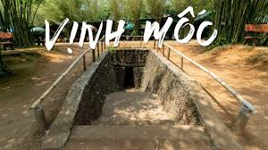
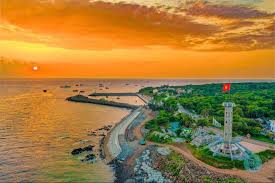

Vùng đất Quảng Trị ngày nay gắn liền lịch sử chiến tranh, trái tim miền Trung kiên cường. Trong lịch sử hành chính cũ có các khu vực thuộc Quảng Bình. Quản trị mới (New Public Management) là một cách tiếp cận quản lý hiện đại được áp dụng trong khu vực công nhằm nâng cao chất lượng hoạt động của bộ máy nhà nước. Mô hình này được xây dựng trên tinh thần đổi mới, lấy hiệu quả làm trung tâm và vận dụng các nguyên tắc quản trị của khu vực tư vào lĩnh vực công. Thay vì chỉ chú trọng vào quy trình hay thủ tục hành chính, quản trị mới hướng đến đo lường kết quả, tối ưu hóa nguồn lực và tăng tính trách nhiệm của từng cơ quan, từng cá nhân. Một điểm nhấn quan trọng của quản trị mới là xem người dân như “khách hàng”, từ đó thúc đẩy các cơ quan công phục vụ nhanh hơn, minh bạch hơn và đáp ứng tốt hơn các nhu cầu của xã hội. Đồng thời, mô hình này cũng khuyến khích cạnh tranh lành mạnh thông qua cơ chế đấu thầu, hợp tác công – tư và trao quyền tự chủ để các đơn vị công chủ động hơn trong quản lý tài chính, nhân sự và phương thức cung cấp dịch vụ. Nhờ những đổi mới đó, quản trị mới góp phần xây dựng nền hành chính tinh gọn, năng động và phù hợp với bối cảnh phát triển, hội nhập của thế giới hiện đại.
Video minh họa
Hình ảnh chân thực về nét đẹp quê hương Quảng Trị/Quảng Bình.
Tổng quan: Phong Nha – Kẻ Bàng là vườn quốc gia nổi tiếng với hệ thống hang động, sông ngầm và rừng nguyên sinh rộng lớn.
Điểm nổi bật: Hang Sơn Đoòng (lớn nhất thế giới), Hang Én, động Phong Nha, sông Chày – hang Tối.
Thời điểm tốt nhất: Tháng 2–8 (khô ráo, thuận lợi cho khám phá hang). Tránh mùa mưa bão (tháng 9–11) khi nhiều tour có thể bị hủy.
Hướng dẫn di chuyển: Từ Đồng Hới (Quảng Bình) đi ôtô/taxi khoảng 45–60 phút, hoặc đi tàu/xe khách dọc đường Hồ Chí Minh. Các tour tham quan thường xuất phát từ thị trấn Phong Nha.
Mẹo: Đặt tour trước cho các hang lớn; chuẩn bị giày bám, đèn pin, quần áo khô và nước.

Bãi biển Nhật Lệ (Quảng Bình)
Tổng quan: Nhật Lệ nằm gần trung tâm thành phố Đồng Hới, nổi tiếng với dải cát trắng mịn và làn nước trong xanh.
Điểm nổi bật: Bãi tắm rộng, hoàng hôn đẹp, nhà hàng hải sản ven biển và dịch vụ cho thuê dù/ghế.
Thời điểm tốt nhất: Tháng 3–9; tránh bão vào mùa mưa.
Hướng dẫn di chuyển: Từ trung tâm Đồng Hới đi xe máy hoặc taxi khoảng 5–15 phút, thuận tiện cho chuyến nghỉ dưỡng ngắn ngày.
Mẹo: Thử hải sản tươi tại chợ địa phương; buổi sáng ít gió thích hợp cho các hoạt động biển.

Đảo Cồn Cỏ (Quảng Trị)
Tổng quan: Cồn Cỏ là một hòn đảo nhỏ nằm ngoài khơi Quảng Trị, nổi bật với cảnh biển hoang sơ và rừng nguyên sinh.
Điểm nổi bật: Bãi biển vắng người, khu rừng nguyên sinh, các di tích chiến tranh và điểm quan sát hải đăng.
Thời điểm tốt nhất: Tháng 2–8 để tránh bão và thời tiết xấu.
Hướng dẫn di chuyển: Đi ferry/ca nô từ Cửa Việt (gần thành phố Đông Hà). Thời gian di chuyển thay đổi theo thời tiết và loại phương tiện.
Mẹo: Mang theo đồ dùng cơ bản (nếu ở lại), tôn trọng môi trường, kiểm tra lịch tàu trước khi đi.
Thiên nhiên và đồi núi miền Trung
Tổng quan: Khu vực miền Trung giữa Quảng Bình và Quảng Trị có cảnh quan đa dạng: đồi núi, rừng, suối và bờ biển — phù hợp cho du lịch mạo hiểm lẫn nghỉ dưỡng.
Điểm nổi bật: Các tuyến trekking, thác nước nhỏ, các điểm ngắm cảnh dọc đường Hồ Chí Minh và các khu bảo tồn thiên nhiên.
Thời điểm tốt nhất: Tháng 2–9; mùa khô dễ di chuyển và quan sát cảnh vật hơn.
Hướng dẫn di chuyển: Di chuyển bằng ôtô, xe máy hoặc tour địa phương. Nhiều điểm không có giao thông công cộng thuận tiện nên nên đi theo tour hoặc thuê xe.
Mẹo: Chuẩn bị đồ bảo hộ cho trekking, mang theo nước, kiểm tra dự báo thời tiết, tôn trọng người dân địa phương và môi trường.
Tổng quan: Thành cổ Quảng Trị là biểu tượng lịch sử của những trận đánh ác liệt, nơi ghi dấu nhiều hy sinh trong kháng chiến.
Ý nghĩa: Hiện là địa điểm tưởng niệm, bảo tồn và giáo dục lịch sử cho thế hệ trẻ.
Lịch sử chi tiết: Thành cổ từng là mục tiêu trong chiến dịch giải phóng, chịu nhiều đợt pháo kích và trận chiến kéo dài, sau chiến tranh được tôn tạo để trở thành khu di tích.
Tham quan: Thời gian tham quan tốt nhất vào buổi sáng hoặc chiều mát; mang theo mũ/nón và nước vì khu vực hầu hết là ngoài trời.

Địa đạo Vịnh Mốc
Tổng quan: Hệ thống địa đạo Vịnh Mốc là minh chứng cho ý chí bền bỉ của người dân trong thời chiến, với những công trình che chở dân cư.
Điểm tham quan: Các tầng địa đạo, nơi sinh hoạt, làm việc và bảo vệ dân cư.
Lịch sử chi tiết: Trong chiến tranh, Vịnh Mốc được đào để tránh bom, một cộng đồng hàng trăm người sống trong lòng đất nhiều tháng; ngày nay địa đạo được bảo tồn và mở cửa cho du khách.
Lưu ý: Một số khu vực có không gian hẹp và ẩm, nên người có vấnề về tim mạch hoặc claustrophobia cân nhắc trước khi vào thăm.

Cầu Hiền Lương / Vĩ tuyến 17
Tổng quan: Cầu Hiền Lương từng là điểm phân định vĩ tuyến 17 giữa hai miền, có ý nghĩa lịch sử quan trọng trong thời chiến và hòa bình.
Ý nghĩa: Nơi trưng bày nhiều hiện vật, hình ảnh gợi nhớ quá khứ và là địa điểm giáo dục lịch sử cho du khách.
Lịch sử chi tiết: Vị trí này chứng kiến nhiều sự kiện chính trị - quân sự, sau này được phục hồi để làm điểm tham quan, có triển lãm tư liệu về cuộc sống thời kỳ chia cắt.
Tham quan: Có thể kết hợp tham quan với các bảo tàng, nhà truyền thống gần đó; thời gian tốt nhất là buổi sáng hoặc chiều tối.
Thư viện ảnh





Liên hệ & Ghi chú
Nếu bạn muốn thêm hình ảnh, video hoặc chỉnh sửa nội dung, hãy gửi thông tin liên hệ hoặc thay thế đường dẫn media trực tiếp trong mã nguồn.